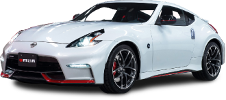
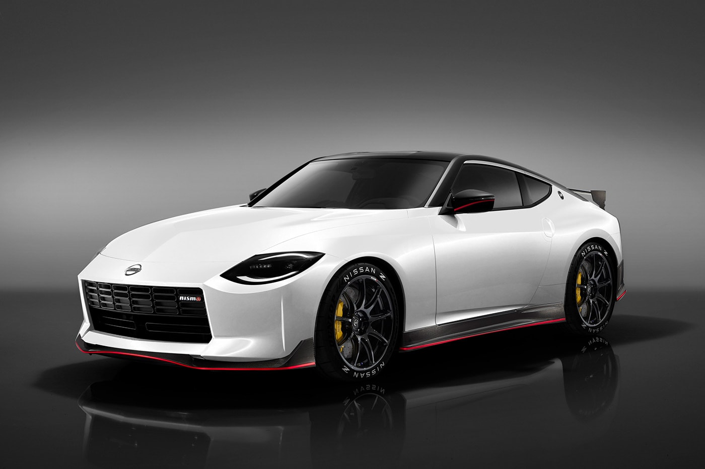

Interactive archive
Nissan Z Archive
Explore the evolution of the Nissan Z
Interactive archive
Browse the cars shown in the prototype direction. Use the search bar or filter buttons to test the browsing flow and review the archive content in one page.
The 240Z introduced the Z-car identity with a clean fastback shape, a driver-focused cabin, and an affordable sports-car feel. It became the visual starting point for the entire archive.

The Z32 pushed the Z into a more advanced 1990s era. Its body became wider and smoother, with a more integrated design language than the earlier cars.

The 350Z reintroduced the Z as a modern performance coupe after a gap in production. It simplified the shape into a short, solid, planted stance that became central to 2000s Nissan performance culture.

The 370Z refined the Z33 formula with tighter proportions and a more aggressive front end. NISMO versions amplified the motorsport feel through aero and chassis-focused styling.

The current Z reinterprets historic Z cues with a modern body and lighting package. Its profile and roofline reference earlier generations while the surfacing is clean and current.
This section explains the archive logic of the prototype. It does not try to cover every Z variation. Instead, it maps the selected cars into a readable timeline so testers can understand the project’s purpose quickly.
The origin point of the Z design language and the main historical anchor for the archive.
Represents the smoother, more technical 1990s period of the Z lineage.
Marks the revival period, reconnecting the Z name to a new generation of enthusiasts.
Extends the revival into a sharper, longer-running performance era.
The current chapter and visual endpoint of this prototype archive.
This website is a proof-of-concept archive about selected Nissan Z models. It is designed useing real images, distinct model content, and a layout that adapts across desktop and mobile screen sizes.
It gives users a simple way to move from a homepage overview to a models browser, then into model details. The archive section adds historical context, while this section explains the project itself.